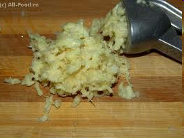
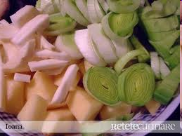
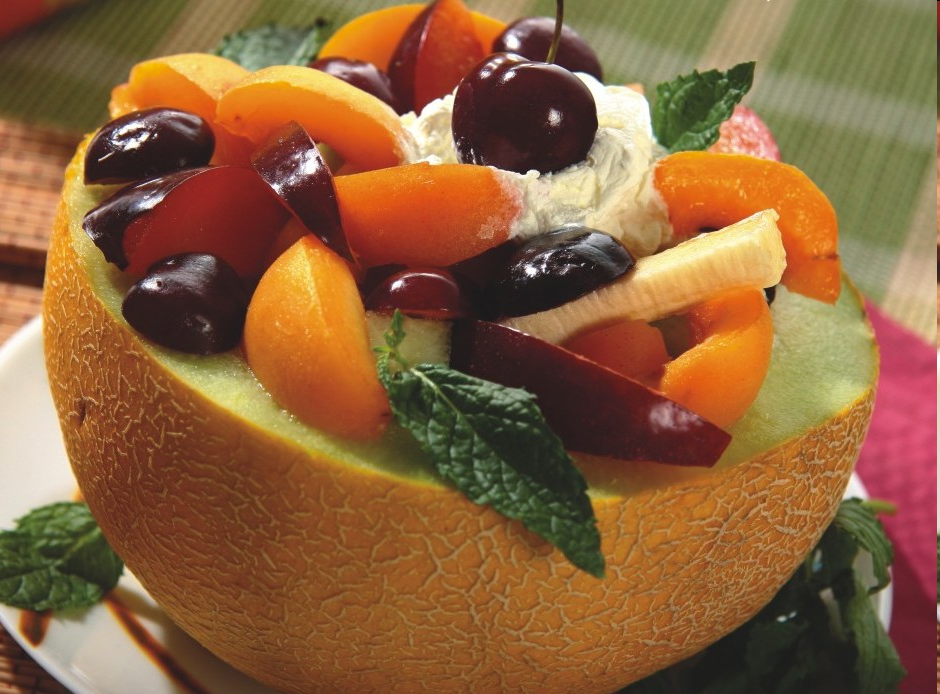
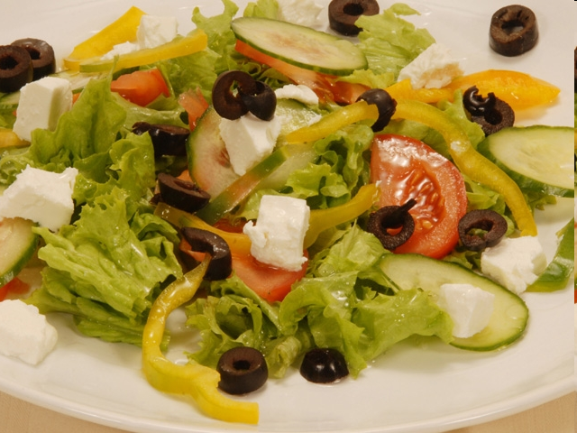
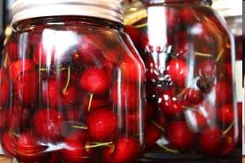
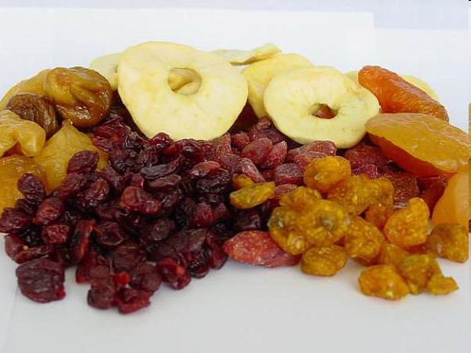
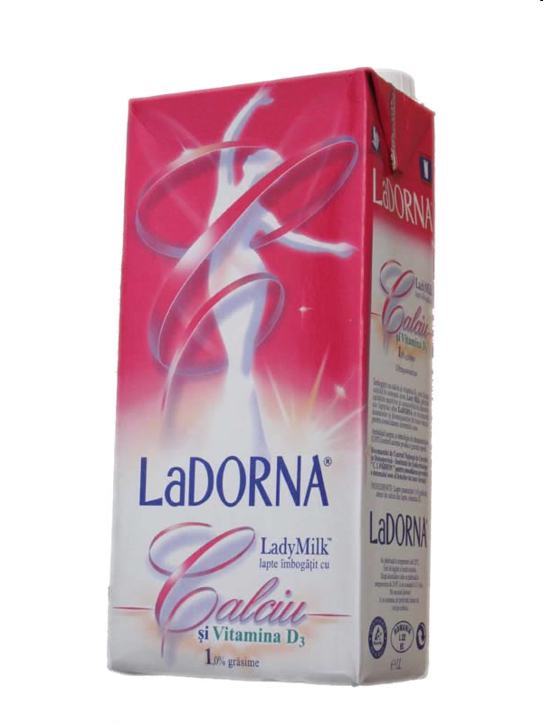
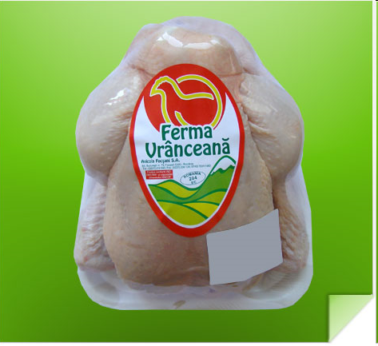

Prepararea alimentelor presupune următoarele etape:
- alegerea alimentelor
- prepararea la rece a alimentelor
- prepararea termică.
Metode de preparare
Metodele mecanice
- curăţarea
- tăierea
- sfărâmarea
- zdrobirea.


Metodele termice
- fierbere
- coacere
- frigere
- prăjire
- înăbuşire, etc.
Metodele biochimice
- fermentarea brânzeturilor
- fermentarea pâinii
- fermentarea berii
- fermentarea vinului, etc.
Prepararea alimentelor la rece
- gustările reci
- salatele
- deserturile.


Prepararea alimentelor la rece
- ciorbele şi supele
- fripturile
- deserturile
- aluaturile.
Metode pentru prepararea la cald
- fierberea
- frigerea
- coacerea
- prăjirea.
Conservarea alimentelor
Metode de conservare
- uscarea
- sterilizarea
- pasteurizarea
- refrigerarea
- congelarea
- utilizarea sării şi a zahărului
- afumarea
- murarea
- marinarea




- igiena personală
- igiena alimentelor
- curăţenia în bucătărie
- igiena locului de muncă
- vasele, vesela, ustensilele - vor fi permanent curate.